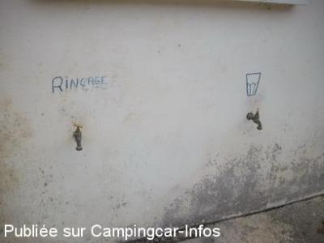
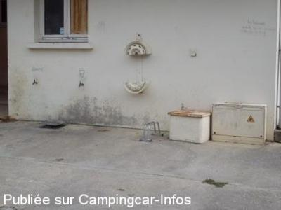
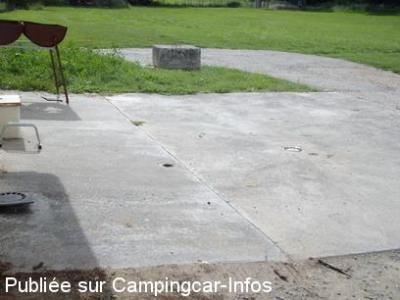
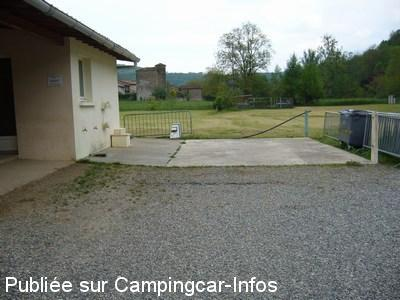
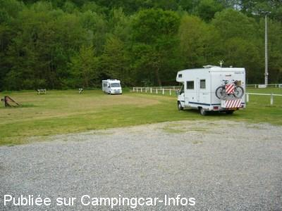
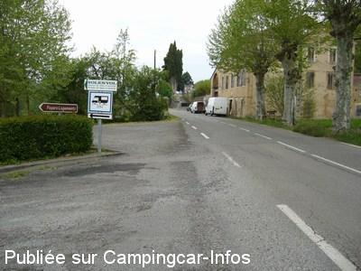

ASN = Aire de services avec stationnement nuit possible de :
SAINTE CROIX VOLVESTRE
(N° 572)
Accès/adresse :
L'Enclos
09230 SAINTE CROIX VOLVESTRE
09230 SAINTE CROIX VOLVESTRE
Latitude : (Nord) 43.1269° Décimaux ou 43° 7′ 36′′
Longitude : (Est) 1.17083° Décimaux ou 1° 10′ 14′′
Tarif : Gratuit
Type de borne : Autre
Services :


Autres informations :
Aire municipale permanente
Stationnement illimité
Tél mairie : +33(0)561 667 216

Le 07/09/2011 par loulou

Le 07/09/2011 par loulou

Le 07/09/2011 par loulou

Le 03/05/2007 par didierlinares

Le 03/05/2007 par didierlinares

Le 03/05/2007 par didierlinares
de
ibe.4264
le 28/09/2014 :
Très bonne aire, hyper calme et tranquille. Attention mon GPS m'a amené du mauvais côté de la rivière. Suivre la direction de Cazeres.l'aire est derrière la maison de retraite.
Très bonne aire, hyper calme et tranquille. Attention mon GPS m'a amené du mauvais côté de la rivière. Suivre la direction de Cazeres.l'aire est derrière la maison de retraite.
de
christianv6043
le 19/06/2012 :
aire bien située et bien exposée au nord du village
parking herbeux bien entretenu jouxtant une rivière .
eau et vidanges accessibles facilement .
très calme car retiré de la route et le clocher ne sonne pas la nuit .
petit restaurant à prix abordable au centre village .
à recommander
aire bien située et bien exposée au nord du village
parking herbeux bien entretenu jouxtant une rivière .
eau et vidanges accessibles facilement .
très calme car retiré de la route et le clocher ne sonne pas la nuit .
petit restaurant à prix abordable au centre village .
à recommander
de
loulou
le 07/09/2011 :
bravo pour l'aménagement de l'aire de service, simple et pratique,et qui ne coûte pas une fortune à la commune.
beaucoup de municipalité devrait prendre exemple
merci sainte croix volvestre
bravo pour l'aménagement de l'aire de service, simple et pratique,et qui ne coûte pas une fortune à la commune.
beaucoup de municipalité devrait prendre exemple
merci sainte croix volvestre
de
louloutte
le 17/05/2011 :
très étonnée de n'être que 2 CC sur cette magnifique aire
nous avons laissé de coté l' aire de ST GIRONS, pour venir ici et vraiment nous ne regrettons pas
cet endroit est vraiment génial, gratuite avec services, bien sur pas le courant, mais faut pas exagérer non plus
de la place, non non pas pour 10 CC mais plutot pour 100 cc, à l'ombre, au soleil, chacuns ses gouts !!!
vraiment une aire a recommander
marché le mercredi matin, nous tombons bien c' est demain
merci ++++ et félicitations à la municipalité de mettre ce magnifique endroit à notre disposition
très étonnée de n'être que 2 CC sur cette magnifique aire
nous avons laissé de coté l' aire de ST GIRONS, pour venir ici et vraiment nous ne regrettons pas
cet endroit est vraiment génial, gratuite avec services, bien sur pas le courant, mais faut pas exagérer non plus
de la place, non non pas pour 10 CC mais plutot pour 100 cc, à l'ombre, au soleil, chacuns ses gouts !!!
vraiment une aire a recommander
marché le mercredi matin, nous tombons bien c' est demain
merci ++++ et félicitations à la municipalité de mettre ce magnifique endroit à notre disposition
de
Moni61
le 18/10/2010 :
Nous avons passé une nuit sur cette aire début octobre. Il y a tellement de place, que comme il n'y avait aucun camping-car lorsque nous sommes arrivés, nous pensions nous être trompés d'endroit! Mais un employé communal nous a confirmé que toute cette place était bien pour les camping-cars! Vraiment très agréable, même un tuyau de branché pour l'eau qui évite de sortir le nôtre!
Un village agréable, des commerces... une jolie région!
Nous avons passé une nuit sur cette aire début octobre. Il y a tellement de place, que comme il n'y avait aucun camping-car lorsque nous sommes arrivés, nous pensions nous être trompés d'endroit! Mais un employé communal nous a confirmé que toute cette place était bien pour les camping-cars! Vraiment très agréable, même un tuyau de branché pour l'eau qui évite de sortir le nôtre!
Un village agréable, des commerces... une jolie région!
de
jacques et marie-france
le 30/07/2009 :
Nous avons fait halte sur cette aire pendant nos vacances : endroit charmant et reposant, services gratuits, commerces à proximité. Nous n'avons que des compliments à faire. Merci à la commune de Sainte Croix Volvestre d'accueillir aussi bien les camping-caristes.
Nous avons fait halte sur cette aire pendant nos vacances : endroit charmant et reposant, services gratuits, commerces à proximité. Nous n'avons que des compliments à faire. Merci à la commune de Sainte Croix Volvestre d'accueillir aussi bien les camping-caristes.
de
Botteau Franck
le 03/03/2009 :
Bonjour, j'habite à coté de l'aire de services et je peux vous dire qu'elle est régulièrement fréquentée par les camping-caristes de passage. Vous pouvez vous faire une idée du village où elle se trouve en allant sur le site www.sainte-croix-volvestre.info
Bonjour, j'habite à coté de l'aire de services et je peux vous dire qu'elle est régulièrement fréquentée par les camping-caristes de passage. Vous pouvez vous faire une idée du village où elle se trouve en allant sur le site www.sainte-croix-volvestre.info
de
FENOL
le 05/10/2008 :
Très belle aire dans un joli village. MERCI Monsieur SAINT CERNIN!
Très belle aire dans un joli village. MERCI Monsieur SAINT CERNIN!
de
Linares
le 22/08/2008 :
Toujours aussi tranquille et largement de places. Dommage que les camping-caristes boudent cette magnifique aire. Nous y reviendrons.
Toujours aussi tranquille et largement de places. Dommage que les camping-caristes boudent cette magnifique aire. Nous y reviendrons.
de
Linares
le 30/04/2007 :
Nous avons eu un accueil très chaleureux de Monsieur SAIN SERNIN, un des participant à la réalisation de cette aire de services.
Nous la recommandons vivement, très calme, paysage très agreable, très propre. A ne pas rater!
Nous avons eu un accueil très chaleureux de Monsieur SAIN SERNIN, un des participant à la réalisation de cette aire de services.
Nous la recommandons vivement, très calme, paysage très agreable, très propre. A ne pas rater!
de
Franck Botteau
le 12/02/2007 :
J'habite près de l'aire de services : en venant de Cazères suivre les panneaux "SOLENVOL" et dirigez vous vers le terrain de rugby ! Cordialement
J'habite près de l'aire de services : en venant de Cazères suivre les panneaux "SOLENVOL" et dirigez vous vers le terrain de rugby ! Cordialement
de
Guillot Michel
le 13/10/2006 :
L'aire de services n'est pas bien signalée; il serait judicieux de mettre un panneau dans le centre du village. Nous avons passé la nuit près du plan d'eau, très calme.
L'aire de services n'est pas bien signalée; il serait judicieux de mettre un panneau dans le centre du village. Nous avons passé la nuit près du plan d'eau, très calme.